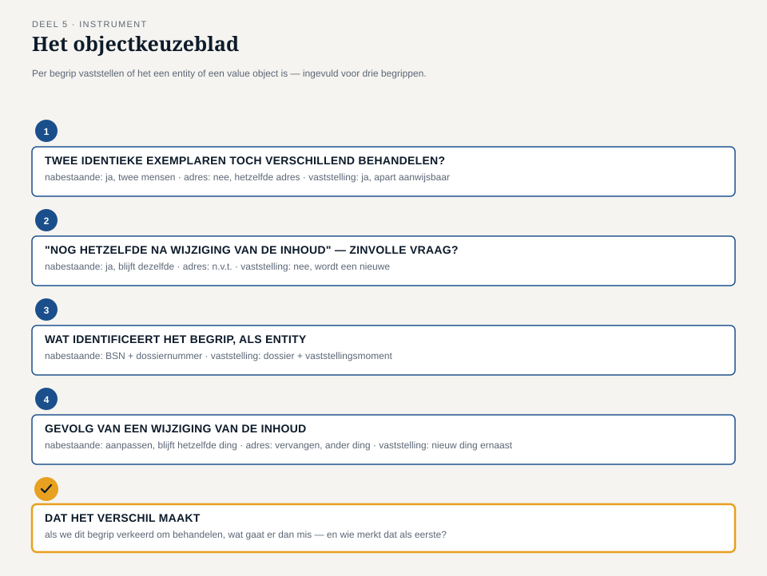

Deel 5 — Entity en value object: identiteit versus waarde
Reader · Ductus-cursus Domain-Driven Design · niveau 1 (fundament) · deel 5 van 30
5.1 Waar dit deel over gaat
Deel 4 eindigde met een model dat weer de taal van Willemijn spreekt, en met een vraag die Tijmen bewust liet openstaan: is dit dossier hetzelfde dossier als gisteren, of een nieuw dossier met dezelfde inhoud? Die vraag klinkt bijna filosofisch, maar ze is voor het Nabestaandenloket keihard praktisch. Het antwoord bepaalt of het team objecten moet bouwen die je door de tijd heen kunt volgen, of objecten die alleen tellen door wat erin staat.
Aan het eind van dit deel kun je:
- in eigen woorden uitleggen wat een entity en een value object zijn, en waarin ze fundamenteel verschillen;
- bij een gegeven begrip uit het Nabestaandenloket beargumenteren of het om identiteit of om waarde gaat;
- benoemen wat er misgaat als je een entity als value object behandelt, en omgekeerd;
- met het objectkeuzeblad een verzameling begrippen indelen in entity’s en value objects, met een onderbouwing die standhoudt bij doorvragen.
5.2 De casus: het adres dat niet meer hetzelfde adres is
Uit het casusdossier: het team heeft het model van deel 4 herzien en werkt nu verder aan de partnervaststelling. Tijmens vraag uit de vorige sessie hangt nog in de lucht.
Willemijn brengt een dossier mee dat ze “gewoon even als voorbeeld” wilde laten zien: dossier 5216, een weduwe die twee jaar geleden is verhuisd, kort na de toekenning van haar partnerpensioen. “Ik moest toen haar adres aanpassen,” zegt ze. “Gewoon het huisnummer en de postcode overschrijven. Niemand vroeg zich af of dat nog steeds dezelfde mevrouw was. Natuurlijk was ze dat.”
Dan pakt ze een tweede dossier: 5217. Ook een adreswijziging, maar deze keer is de nabestaande na de toekenning opnieuw getrouwd en heeft ze een nieuwe achternaam. “Ook toen heb ik het dossier niet vervangen. Ik heb het aangepast. Zij is dezelfde persoon die recht heeft op de uitkering, ook al is haar naam anders.”
Daan knikt, en trekt de vergelijking door naar iets waar hij zelf tegenaan liep bij het herziene model uit deel 4: de partnervaststelling zelf. “Als Beleid en Actuariaat een rekenregel wijzigt en we herberekenen het bijzonder partnerpensioen van dossier 5216, is dat dan nog dezelfde partnervaststelling met een nieuw bedrag? Of wordt het een nieuwe vaststelling?”
Rutger fronst. “Dat voelt anders dan het adres. Bij het adres was er nooit twijfel — er is er maar één, en die verandert gewoon. Bij een vaststelling… als het bedrag verandert, is de vaststelling zelf toch niet meer hetzelfde? Het is een ander besluit, met een andere uitkomst.”
Saïda, die net is binnengekomen voor het compliance-onderdeel van de sessie, luistert een moment mee en zegt dan: “Dat onderscheid interesseert mij meer dan jullie denken. Als er ooit een bezwaar komt tegen een oud bedrag, moet ik kunnen aanwijzen: dit was de vaststelling van destijds, met dít bedrag, op díe datum. Als jullie het bedrag straks gewoon overschrijven zoals bij het adres, ben ik dat bewijs kwijt.”
Tijmen laat het even bezinken en formuleert dan de vraag die het hart van dit deel wordt: “Er zitten in dit dossier dus twee soorten dingen. Dingen waarvan het niet uitmaakt wát erin staat, zolang we maar weten wíe of wát het is — zoals de weduwe zelf, hoe haar naam of adres ook verandert. En dingen waarvan het juist niet uitmaakt wélk exemplaar het is, zolang de inhoud maar klopt — of misschien juist dingen waarbij een gewijzigde inhoud betekent dat het een ander ding is geworden. Wat is wat, hier?”
5.3 Wat identiteit en waarde zijn
Domain-Driven Design onderscheidt twee soorten objecten in een domeinmodel, op basis van één vraag: telt dit object door wie of wat het is, of door wat erin staat?
Een entity is een object met een eigen, blijvende identiteit, die losstaat van de waarden die het op enig moment bevat. Twee entity’s met precies dezelfde gegevens zijn nog steeds twee verschillende dingen als ze een andere identiteit hebben. Andersom: één entity blijft hetzelfde ding, ook als al zijn gegevens in de loop van de tijd veranderen. De weduwe uit dossier 5216 is, ook na haar naamswijziging, dezelfde nabestaande — omdat er iets is dat haar identiteit vasthoudt, onafhankelijk van haar naam of adres op enig moment.
Een value object is een object dat volledig wordt bepaald door zijn waarden, zonder eigen identiteit. Twee value objects met dezelfde inhoud zíjn, voor het domein, hetzelfde — het maakt niet uit welk “exemplaar” je in handen hebt. Verander je de inhoud, dan heb je geen ander exemplaar van hetzelfde ding, maar een nieuw value object. Een bedrag van € 842,17 is een value object: er bestaat geen zinvolle vraag “is dit hetzelfde bedrag als het bedrag dat ik gisteren zag”, alleen de vraag “is dit bedrag gelijk aan dat bedrag”. Twee keer € 842,17 zijn niet twee exemplaren van hetzelfde bedrag die je uit elkaar zou moeten houden — ze zijn simpelweg gelijk.

De test die het onderscheid scherp maakt
De reader in deel 4 leerde je vragen of een modelfragment nog de kaart is of al het terrein. Voor entity versus value object werkt een vergelijkbare, korte test, die je bij elk begrip kunt toepassen:
Stel je voor dat je twee objecten hebt met exact dezelfde gegevens. Zijn dat dan twee verschillende dingen, of is dat gewoon hetzelfde ding, twee keer opgeschreven?
Twee nabestaanden met toevallig dezelfde naam, hetzelfde adres en dezelfde geboortedatum zijn, voor het Nabestaandenloket, nog steeds twee verschillende mensen — dus een entity. Twee bedragen van € 842,17 zijn, hoe je ze ook aantreft, hetzelfde bedrag — dus een value object.
Een tweede, aanvullende test: kun je een zinvolle vraag stellen als “is dit nog hetzelfde exemplaar als gisteren, ook al is de inhoud gewijzigd”? Bij een entity is die vraag zinvol en meestal met “ja” te beantwoorden — de weduwe blijft de weduwe. Bij een value object is de vraag zelf ongeldig: er is geen “exemplaar” dat losstaat van de inhoud om naar te vragen. Verander je de inhoud, dan heb je een ander value object, punt.
Waarom dit meer is dan een etiket
Het onderscheid lijkt op het eerste gezicht een kwestie van naamgeving, maar het bepaalt drie dingen die het team bij de bouw direct raken.
Gelijkheid. Bij een entity vergelijk je op identiteit: zijn dit dezelfde persoon, hetzelfde dossier, dezelfde vaststelling — ongeacht wat erin staat. Bij een value object vergelijk je op inhoud: zijn de waarden gelijk. Verwissel je dat, dan ontstaan fouten die moeilijk te doorgronden zijn: een systeem dat twee bedragen van € 842,17 als “verschillend” behandelt omdat ze uit twee verschillende regels komen, of een systeem dat twee nabestaanden met identieke gegevens per ongeluk samenvoegt tot één persoon.
Verandering. Een entity kán veranderen en blijft zichzelf — de weduwe verandert van naam en blijft de weduwe. Een value object verandert per definitie niet: zodra de inhoud anders wordt, is het een nieuw, ander value object, ook al gebruik je in de code misschien hetzelfde stukje geheugen om het op te slaan. Dat is precies waar Rutgers intuïtie bij de partnervaststelling op wees, en waar dit deel verderop op terugkomt.
Herkenbaarheid over tijd. Alleen een entity heeft iets nodig om herkend te worden: een dossiernummer, een BSN, een uniek kenmerk dat blijft bestaan ook als alle andere velden wijzigen. Een value object heeft dat niet nodig — de inhoud zelf is voldoende om het te herkennen en te vergelijken.

De valkuil van “het heeft een tabel dus het is een entity”
Een veelgemaakte fout — en Daan trapt er in deze sessie zelf ook eerst in — is te denken dat alles wat in de polisadministratie een eigen rij met een eigen id heeft, dus wel een entity zal zijn. Dat is een technische aanwijzing, geen domeinredenering. Een database geeft vaak aan alles een primaire sleutel, inclusief dingen die in het domein helemaal geen eigen identiteit hebben — een adres, een bedrag, een periode. Dat een tabel ADRES een id-kolom heeft, zegt iets over hoe de huidige polisadministratie is gebouwd, niet over hoe het domein in elkaar zit. Dit is dezelfde valkuil als in deel 4: het terrein dat zich voordoet als de kaart. De vraag is niet “heeft dit een technische sleutel”, maar “heeft dit een identiteit waar het domein om geeft”.
Omgekeerd geldt ook een valkuil: iets als “gewoon een tekstveld” wegzetten omdat het geen eigen tabel heeft, terwijl het in het domein wél degelijk identiteit draagt. Een BSN, bijvoorbeeld, ziet er in de polisadministratie uit als een simpel tekstveld — maar het identificeert een deelnemer op een manier die het hele proces daarop laat steunen. De techniek van vandaag voorspelt dus in geen van beide richtingen betrouwbaar wat het domein morgen nodig heeft.
5.4 De werkvorm: het objectkeuzeblad
Het instrument van dit deel is het objectkeuzeblad: een sjabloon waarmee je, voor een lijst begrippen uit het domein, systematisch vaststelt of elk begrip een entity of een value object is — en waarom.
Het invulblad
Voor elk begrip dat je beoordeelt, doorloop je vier vragen.
Zijn er twee exemplaren met identieke gegevens denkbaar die tóch verschillend moeten worden behandeld? Zo ja: het begrip heeft een eigen identiteit los van de inhoud, en is een kandidaat-entity. Zo nee, en de gegevens zelf bepalen volledig wat het is: kandidaat-value object.
Is er een zinvolle vraag “is dit nog hetzelfde als voorheen, ook al is de inhoud gewijzigd”? Bij een entity is deze vraag zinvol en vaak met ja te beantwoorden. Bij een value object is de vraag zelf niet van toepassing — elke inhoudswijziging levert een ander value object op.
Wat identificeert dit begrip, als het een entity is? Benoem het concrete kenmerk dat de identiteit draagt door de tijd heen: een dossiernummer, een BSN, een combinatie van velden die samen uniek zijn. Kun je niets aanwijzen, wees dan achterdochtig over de aanname dat het een entity is.
Wat gebeurt er als de inhoud van dit begrip wijzigt? Blijft het “hetzelfde ding met een nieuwe waarde” (entity, aanpassen) of ontstaat er “een ander ding” (value object, vervangen)? Deze vraag maakt vaak in één keer duidelijk waar Rutgers intuïtie bij de partnervaststelling vandaan komt.
Het veld dat het verschil maakt
Onder deze vier vragen staat het afsluitende veld:
Dat het verschil maakt: als we dit begrip verkeerd om behandelen — een entity als value object, of een value object als entity — wat gaat er dan mis, en wie merkt dat als eerste?
Net als bij de modeltoets in deel 4 gaat dit veld niet over het benoemen van een categorie, maar over de concrete consequentie van een verkeerde keuze. “Het adres is een value object” is een label; “als we het adres als entity behandelen, met een eigen id die je apart bijwerkt, kan het gebeuren dat een oud adres blijft rondslingeren gekoppeld aan de nabestaande — en dan stuurt Meridiaan straks per ongeluk een brief naar het oude huisnummer, en Willemijn is degene die de klacht daarover krijgt” is een inzicht dat een ontwerpkeuze verdedigbaar maakt.

5.5 Terug naar de casus
Het team past het objectkeuzeblad toe op de begrippen die in de twee dossiers naar voren kwamen.
De nabestaande. Twee exemplaren met identieke gegevens (naam, adres, geboortedatum) zouden, mocht dat ooit voorkomen, nog steeds twee verschillende mensen zijn — dus een kandidaat-entity. De vraag “is dit nog dezelfde persoon na een naamswijziging” is zinvol en het antwoord is ja, zoals dossier 5217 laat zien. Identificerend kenmerk: het BSN, aangevuld met het dossiernummer voor de relatie tot dít recht. Bij wijziging van naam of adres blijft het dezelfde nabestaande — de gegevens worden aangepast, het “ding” blijft hetzelfde. Conclusie: entity.
Het adres. Twee adressen met identieke gegevens (dezelfde straat, hetzelfde huisnummer, dezelfde postcode) zijn, voor het domein, gewoon hetzelfde adres — er is geen zinvolle reden om ze als twee verschillende “exemplaren” te onderscheiden. De vraag “is dit nog hetzelfde adres na wijziging” is niet van toepassing: zodra de nabestaande verhuist, is er een nieuw adres, geen aangepast adres. Bij wijziging ontstaat dus een ander ding, geen aangepast ding. Conclusie: value object. Willemijns handeling (“het huisnummer en de postcode overschrijven”) beschrijft feitelijk dat de nabestaande-entity een nieuw adres-value-object toegewezen krijgt, niet dat het bestaande adres wordt “bewerkt”.
De partnervaststelling. Hier ontstaat de discussie die Rutger al voelde aankomen. Twee vaststellingen met identiek bedrag, identieke datum en identieke onderbouwing zouden, als ze uit twee verschillende besluitmomenten voortkomen, wél als verschillend moeten worden behandeld — Saïda’s compliance-eis maakt dat scherp: elk besluit moet afzonderlijk aanwijsbaar blijven, ook als het bedrag toevallig gelijk is aan een eerder besluit. De vraag “is dit nog dezelfde vaststelling na herberekening” krijgt hier een genuanceerd antwoord: als Beleid en Actuariaat een rekenregel wijzigt en het bedrag van dossier 5216 wordt herberekend, ontstaat er geen aangepaste versie van de oude vaststelling — er ontstaat een nieuwe vaststelling, met een eigen datum en een eigen onderbouwing, die de oude vaststelling niet overschrijft maar ernaast komt te staan. Conclusie: entity, met als identificerend kenmerk niet het bedrag (dat kan toevallig gelijk zijn aan een andere vaststelling) maar de combinatie van dossier en vaststellingsmoment.
Saïda leunt achterover als het team bij deze conclusie uitkomt. “Dat is precies wat ik nodig heb. Niet ‘het bedrag is gewijzigd’, maar ‘er is een nieuwe vaststelling bijgekomen, en de oude blijft bestaan als bewijs van destijds’.”
Bij het afsluitende veld schrijft Willemijn, voor het begrip adres: “Als we het adres als entity zouden behandelen — met een eigen identiteit die apart wordt bijgewerkt — dan kan een oud adres blijven hangen aan een nabestaande zonder dat iemand het merkt, en dan stuurt Meridiaan een brief naar een huis waar niemand meer woont. Ik ben degene die dan de klacht krijgt, drie weken later.”
Rutger, die de sessie begon met “dat voelt anders”, formuleert de conclusie die hem het meest heeft verrast: “Ik dacht dat ‘entity’ iets was voor grote, belangrijke dingen en ‘value object’ voor kleine, onbelangrijke velden. Dat klopt niet. Een bedrag van een paar honderd euro kan een value object zijn en een besluit dat we nooit meer mogen overschrijven, is een entity — het gaat niet om hoe belangrijk iets is, het gaat om of het door zijn identiteit telt of door zijn inhoud.”
Tijmen sluit af met de vraag die naar deel 6 wijst: “We hebben nu twee entity’s die met elkaar te maken hebben — de nabestaande en de partnervaststelling — en een paar value objects eromheen. Maar niet alles wat met elkaar te maken heeft, hoort ook in één keer samen gewijzigd te worden. Als we straks de vaststelling aanpassen, moet dan ook automatisch het dossier zelf worden bijgewerkt? En wat gebeurt er als twee mensen tegelijk aan hetzelfde dossier werken — hoever reikt de grens waarbinnen alles in één keer moet kloppen?”
Vooruit naar deel 6. Dat is de vraag van het volgende deel: waar ligt de grens waarbinnen een cluster van entity’s en value objects altijd samen consistent moet zijn, en wie bewaakt die grens? Die grens heet in Domain-Driven Design het aggregate, en het Nabestaandenloket-team gaat hem voor het eerst trekken rond het dossier van dossier 5216.